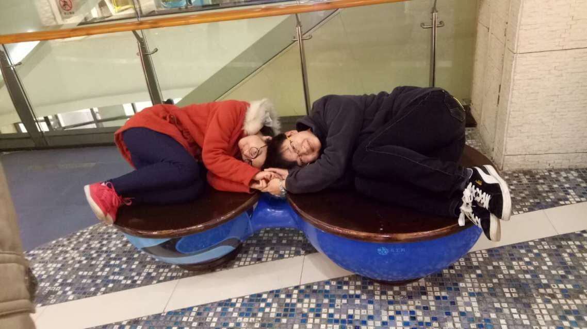
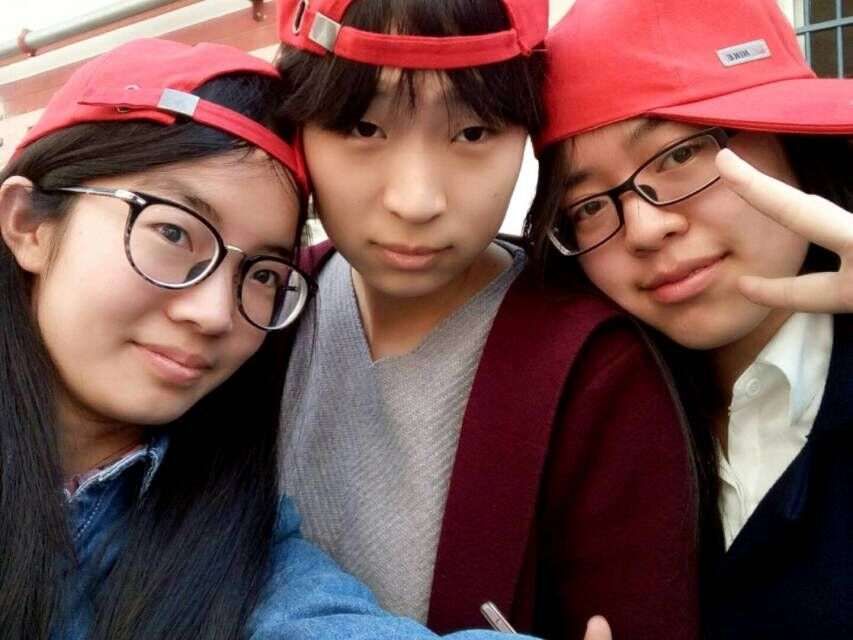
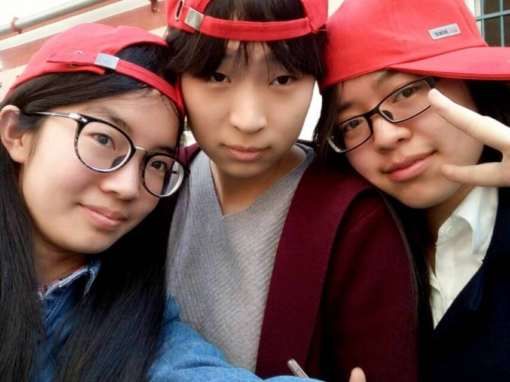
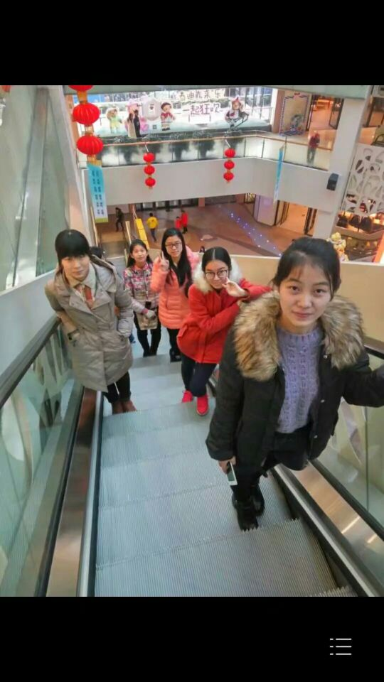
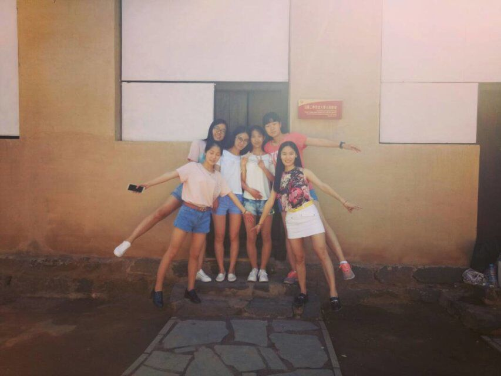

我的大学环境
大学简介
河北师范大学是河北省人民政府与教育部共建的省属重点大学，具有一百余年的发展历史和光荣的办学传统。学校起源于1902年创建于北京的顺天府学堂和1906年创建于天津的北洋女师范学堂。1996年6月，原河北师范大学、河北师范学院与创建于1952年的河北教育学院、创建于1984年的河北职业技术师范学院合并，组建成新的河北师范大学。校友中有老一代革命家邓颖超、刘清扬、郭隆真、杨秀峰、康世恩、荣高棠等，有学界名人梁漱溟、张申府、汤用彤等，有中科院院士严陆光、郝柏林、李树深等，也有许绍发、蔡振华等一批体育界精英。新中国成立以来，学校共为国家培养了20余万名各类专业人才。
学校构建了基础教育、职业教育和高等教育师资培养“三教并举”、培养培训一体化的完整教师教育体系。特别是从2006年开始，系统开展了顶岗实习支教工程，并以此为基础，逐步形成了“3.5+0.5”的人才培养新模式，教师教育的特色进一步强化。顶岗实习支教，走在了全国高校的前列，受到了基层中学的普遍欢迎，得到了各级领导和教育部的充分肯定，国务委员刘延东就此项工作曾两次作出批示予以推广。2013年6月，国务院总理李克强来校视察工作时，对学校在基层锻炼学生的做法和学生愿意到基层就业的人生选择给予了高度评价。在强化教师教育特色的同时，学校积极发展非师范教育，为经济社会发展培养急需人才。2015年6月，学校荣膺“全国毕业生就业典型经验高校50强”。
科学研究不断取得新进展，年到位外科研经费快速增长，由2002年的610万元增长到2014年的10033万元。年承担国家基金项目数量位居省内高校前列，承担了一批国家“973”、“863”计划、国家自然科学基金重点项目、国家社科基金重大招标项目、国家社科基金重点项目、国家清史纂修工程主体类项目等一批具有较大影响的科研项目。2010年，孙大业院士课题组获国家自然科学二等奖，填补了河北省的空白；蒋春澜教授指导的博士论文进入“全国百篇优博”行列。一些自然科学研究成果发表在Science、Nature等国际权威学术期刊上，人文社会科学研究成果分获全国高校优秀人文社科成果奖、国家辞书奖、鲁迅文学奖等。发挥学科优势，已建成“生物适应环境的细胞信号调节机制”、“数字教育”和“河北省燕赵学术研究中心”3个省级协同创新中心，组建了河北省数学研究中心、移动物联网研究院、泥河湾考古研究院，积极开展校企（地）合作。中国共产党革命精神与文化资源研究基地已取得丰硕理论研究成果，被纳入国家人文社科重点研究基地建设系列。燕赵文化研究中心已在60多个课题领域开展了研究和探索。此外，学校在小麦新品种、生物制药、信息技术等研究领域，多项研究成果获得专利授权，服务经济建设和社会发展能力明显增强。
河北师范大学是河北省人民政府与教育部共建的省属重点大学，具有一百余年的发展历史和光荣的办学传统。学校起源于1902年创建于北京的顺天府学堂和1906年创建于天津的北洋女师范学堂。1996年6月，原河北师范大学、河北师范学院与创建于1952年的河北教育学院、创建于1984年的河北职业技术师范学院合并，组建成新的河北师范大学。校友中有老一代革命家邓颖超、刘清扬、郭隆真、杨秀峰、康世恩、荣高棠等，有学界名人梁漱溟、张申府、汤用彤等，有中科院院士严陆光、郝柏林、李树深等，也有许绍发、蔡振华等一批体育界精英。新中国成立以来，学校共为国家培养了20余万名各类专业人才。
学校构建了基础教育、职业教育和高等教育师资培养“三教并举”、培养培训一体化的完整教师教育体系。特别是从2006年开始，系统开展了顶岗实习支教工程，并以此为基础，逐步形成了“3.5+0.5”的人才培养新模式，教师教育的特色进一步强化。顶岗实习支教，走在了全国高校的前列，受到了基层中学的普遍欢迎，得到了各级领导和教育部的充分肯定，国务委员刘延东就此项工作曾两次作出批示予以推广。2013年6月，国务院总理李克强来校视察工作时，对学校在基层锻炼学生的做法和学生愿意到基层就业的人生选择给予了高度评价。在强化教师教育特色的同时，学校积极发展非师范教育，为经济社会发展培养急需人才。2015年6月，学校荣膺“全国毕业生就业典型经验高校50强”。
科学研究不断取得新进展，年到位外科研经费快速增长，由2002年的610万元增长到2014年的10033万元。年承担国家基金项目数量位居省内高校前列，承担了一批国家“973”、“863”计划、国家自然科学基金重点项目、国家社科基金重大招标项目、国家社科基金重点项目、国家清史纂修工程主体类项目等一批具有较大影响的科研项目。2010年，孙大业院士课题组获国家自然科学二等奖，填补了河北省的空白；蒋春澜教授指导的博士论文进入“全国百篇优博”行列。一些自然科学研究成果发表在Science、Nature等国际权威学术期刊上，人文社会科学研究成果分获全国高校优秀人文社科成果奖、国家辞书奖、鲁迅文学奖等。发挥学科优势，已建成“生物适应环境的细胞信号调节机制”、“数字教育”和“河北省燕赵学术研究中心”3个省级协同创新中心，组建了河北省数学研究中心、移动物联网研究院、泥河湾考古研究院，积极开展校企（地）合作。中国共产党革命精神与文化资源研究基地已取得丰硕理论研究成果，被纳入国家人文社科重点研究基地建设系列。燕赵文化研究中心已在60多个课题领域开展了研究和探索。此外，学校在小麦新品种、生物制药、信息技术等研究领域，多项研究成果获得专利授权，服务经济建设和社会发展能力明显增强。


我的大学舍友



小可爱们的合照


我们是一家人，
相亲相爱的一家人，
我们一起玩耍，
一起开心，一起笑，
一起成长，一起进步，
我爱你们！
相亲相爱的一家人，
我们一起玩耍，
一起开心，一起笑，
一起成长，一起进步，
我爱你们！